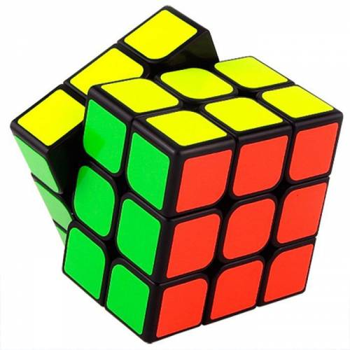

|  | ||||
| PLL algorithms | hakkımda | iletisim | ||
| Herkese merhaba ben Kayra.13 yaşındayım. 8 yaşından beri rubik küplerle ilgileniyorum.Bu benim ilk web sitem.Ben de ilk web sitemde CFOP metotunda rubik küp çözerken kendime uygun algoritmayı bulma konusunda yaşadığım sorunu çözmek istedim.umarım sitemi beğenmişsinizdir. | ||||